Sparse identification of blocked forces using a global-residual interface representation
Authors
Affiliations
Seyed M Hoseyni
Acoustics Research Centre, University of Salford
Ehsan Ahmadi
Farrat IsoLevel LTD
Oliver Farrell
Farrat IsoLevel LTD
Joshua WR Meggitt
Acoustics Research Centre, University of Salford
Published
April 23, 2026
Abstract
Choosing an appropriate interface representation is a crucial step when identifying forces by inverse methods. A preferred interface representation should be interpretable, but also well conditioned and able to recover forces with low error. Currently, the most widely adopted representation is that of the Virtual Point (VP), a local projection of measured degrees of freedom (DoFs) onto a set of co-located rigid-body modes. Though easily interpretable, poor conditioning/large errors are often obtained at low frequencies when the source dynamics are dominated by global rigid body motions; a result of over-parametrising the interface model. In this paper we explore a reformulation of the VP representation by separating the global and residual components of the interface dynamics; global rigid body dynamics are filtered out of the local interface motions and projected onto their own global VP, the remaining residual interface motions are projected onto a set of local VPs. The result is an interpretable interface representation that provides a clear separation of the local and global source dynamics. Its application is demonstrated on a heavy weight stamping press under rigid and resilient boundary conditions.
Blocked force, Virtual point transformation, Interface dynamics, Inverse problem
1 Introduction
To characterise a vibration source, such as an operating machine, it is standard practice to consider some set of equivalent forces at its connecting interface, as opposed to the complex generating forces that reside within the machine. This choice is largely one of convenience, as the internal forces are inaccessible and often not well defined in terms of their position or direction. It does however offer other advantages; it allows us to compare one source with another, to identify troublesome force contributions, and even build Vibro-Acoustic Virtual Prototypes of hypothetical assemblies [1].
The most common means of characterising a vibration source is by inverse methods; the operational response of system (i.e. whilst the machine is active) is used to infer a set of equivalent forces that would yield the observed response when applied to the interface DoFs. This approach forms the basis of inverse force identification (IFI) [2] as used in classical (contact force) [3], [4] and blocked force [5] Transfer Path Analysis methods.
The first, and often most crucial, step in the application of IFI is the selection of an interface model, i.e. choosing the location and form of the equivalent forces (translations, rotations, etc.) that are to act across the interface. Mathematically, the choice of interface model is rather arbitrary, providing that it is sufficiently detailed that it is able to control the response within the attached receiver (i.e. enough DoFs are included). However, as a practical method not all representations are created equal.
An interface representation appropriate for IFI should be:
Interpretable — the identified forces should be easily understood by a test engineer.
Well conditioned — the resulting inverse problem should be able to recover forces with low error.
Practical — the representation should be accessible from a set of measured DoFs.
A variety of interface representations have been proposed over the decades, including: equivalent multi-point connection [6], equivalent single-point connection [7], finite difference approximations [8], interface mobility [9], virtual point [10] (with flexible extension [11]), and polynomial basis [12], among others. At the time of writing, the virtual point appears to be the front runner in terms of popularity, owing to its straightforward implementation, enforcement of co-located DoFs, and ability to include flexible interface dynamics.
With a standard VP, each interface connection point is first characterized experimentally by a set of ‘measurement’ DoFs which are then projected onto a virtual point through a set of rigid body constraints. The result is an interface representation where each connection point is described by 6 DoFs; translations in \(x\), \(y\) and \(z\), along with a rotation about each axis (\(\alpha\), \(\beta\) and \(\gamma\)). In the mid frequency range, where the connection points move independently whilst remaining locally rigid, this is a valid representation. At higher frequencies, where local flexure becomes important, the VPT representation can be extended to include the so-called flexible interface deformation modes, such as extension, skew, etc. However, in the low frequency range, where the source dynamics are dominated by global rigid body motions (i.e. the entire machine moves as a single rigid body), the above representation leads to a severe redundancy/over-parametrisation of the interface. As an example, for a 4 footed source \(24\) VP DoFs would be used to describe just \(6\) dominant rigid body motions. This over-parametrisation can lead to ill-conditioning of the inverse problem and cause increased levels of uncertainty as a result. In this paper, we are interested in means of better representing interfaces, specifically in the low-mid frequency range, to reduce the above issues.
Our approach is quite simple and is based on an augmentation of the standard VP approach. In short, we define a global VP onto which all interface measurements are projected. This captures the global rigid body motions of the source (more specifically, it captures the linearly correlated interface dynamics). These rigid body motions are then filtered out of the initial interface measurements, the residuals of which are projected onto a series of local VPs which describe the non-rigid body local flexure of the source (i.e. the linearly uncorrelated dynamics). If interest is strictly in the low-frequency range, these residual DoFs can be omitted. Alternatively, they can be retained in their entirety, or subject to a DoF selection procedure[13].
Having outlined the context of this paper, its remainder will be organised as follows. In Section 2 we first introduce the relevant background theory (namely, blocked force identification Section 2.1 and the virtual point transformation Section 2.2) before outlining our proposed global-residual interface representation in Section 2.3. In Section 3 we consider an experimental example consisting of a large heavy weight stamping press on both rigid and resilient footings. Finally, in Section 4 we provide some concluding remarks and thoughts for further development.
2 Theory
In this section we describe the main background theory relevant to this work, namely; the indirect determination of blocked forces (Section 2.1) and the virtual point transformation (Section 2.2). In Section 2.3 we propose our reformulation of the virtual point representation in terms of global and residual interface dynamics.
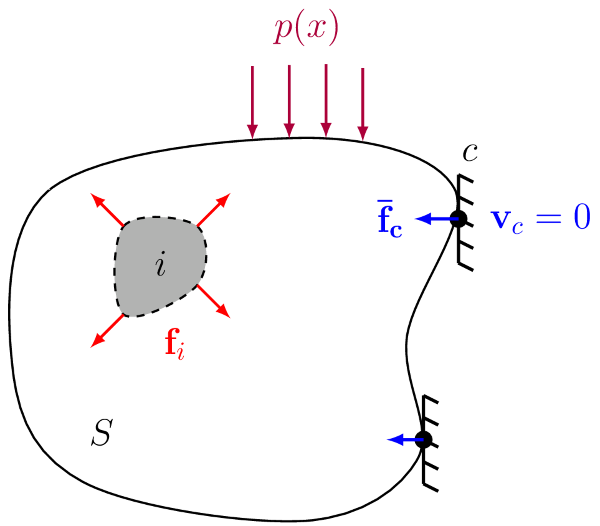
Figure 1: Illustration of blocked force. \(\mathbf{f}_i\) and \(p(x)\) represent internal forcing and distributed loading over the source. \(\mathbf{\bar{f}}_c\) is the blocking constraint force required to satisfy the rigid constraint \(\mathbf{v}_c = \mathbf{0}\).
2.1 Blocked force identification
The blocked force describes the reaction force at the interface \(c\) of a vibration source whilst operating under a rigid constraint, as illustrated in Figure 1. Equivalently, it can be interpreted as the force which when applied externally to the interface, counteracts the motion of the interface and thus constrains its motion to zero.
Mathematically, we can define the blocked force as, \[
\mathbf{\bar{f}}_{c} = \mathbf{{g}}_{c}\Big|_{\mathbf{v}_{c}=\mathbf{0}}
\] where \(\mathbf{{g}}_{c}\) denotes the contact force occurring at the interface \(c\), with the blocked force \(\mathbf{\bar{{f}}}_{c}\) simply the limiting force as the interface is placed under the rigid constraint \(\mathbf{v}_{c}=\mathbf{0}\).
It is clear that by providing an idealised rigid constraint at the boundary, the blocked force provides an independent source description free from the influence of any specific receiver. The blocked force is therefore also an independent source property.
To characterise the blocked force of a vibration source directly it is necessary to attach the source to an (approx.) infinitely rigid test bench, for example a large blocking mass, with force transducers placed between the source contacts and the test bench. Clearly, this ‘infinitely rigid’ requirement can only be satisfied approximately over a particular frequency range; even the most rigid test bench will eventually enter a modal/flexible regime. Achieving a sufficiently rigid condition can be further complicated by the mounting requirements of the source. Another notable challenge involves the determination of rotational and in-plane blocked forces. In short, the direct measurement of the blocked force is fraught with difficulties and generally not practical. Fortunately, an indirect measurement approach is available.
The direct method described above is focused on measuring force directly, by means of installed force transducers. The indirect approach involves the measurement of induced response, from which we infer the unknown blocked force.
The key equation on which the indirect approach is based is given by[5], \[
\mathbf{v}_{b} = \mathbf{Y}_{Cbc}\,\mathbf{\bar{f}}_{c}
\tag{1}\] where \(\mathbf{v}_{b}\) is the operational response (to be measured) of the structure at a set of indicator positions \(b\), \(\mathbf{Y}_{Cbc}\) is the transfer FRF of the assembled structure (also to be measured), and \(\mathbf{\bar{f}}_{c}\) is the unknown blocked force. Equation 1 provides a relation between the blocked force of a vibration source and the response of the assembly in which it is installed.
Note that the indicator DoFs \(b\) can be located at the interface \(c\), in which case Equation 1 becomes, \[
\mathbf{v}_{c} = \mathbf{Y}_{Ccc}\,\mathbf{\bar{f}}_{c}.
\tag{2}\]
To determine the blocked force we have to solve the inverse problem. Pre-multiplication of both sides of Equation 1 by the (pseudo-)inverse FRF matrix yields (assuming it exists), \[
\mathbf{\bar{f}}_{c} = \mathbf{Y}_{Cbc}^{-1}\mathbf{v}_{b} \quad \left( \text{or } \quad
\mathbf{\bar{f}}_{c} = \mathbf{Y}_{Ccc}^{-1}\mathbf{v}_{c} \right).
\tag{3}\]
To solve Equation 1, as per Equation 3, it is necessary that number of measured responses (\(M\)) is equal to, or greater than, the number of blocked forces that are being determined. That is, to determine \(N\) blocked forces, \(M\geq N\) responses should be recorded. The dimensions of the FRF matrix \(\mathbf{Y}_{Cbc}\) should be consistent with those of the blocked force and velocity vectors; it should be \(M\times N\).
For more detail on the specifics of Equation 2 and Equation 3, including its derivation, practical implementation, and uncertainty the reader is referred to [1] and the references therein.
Importantly, Equation 3 provides a means of determining the blocked force without requiring an infinitely rigid test bench. In fact, no restrictions are placed on the assembly \(C\) in which the source is installed. As such, Equation 3 enables an in-situ characterisation of the blocked force; the source need not be removed from its intended installation. Of such practical use is the indirect blocked force method that it has now been established as an international standard (ISO 20270:2019).
2.1.1 Interface representations
In our description of the in-direct blocked force method we glossed over one very important detail, the interface representation. In Equation 1 and Equation 2 we denoted the interface DoFs simply by the subscript \(c\). We did not however, describe what these DoFs are… In fact, we have great flexibility over how we choose to define, or represent, the interface. For example, an interface with discrete connection points might be well represented by a set of co-located point-like DoFs (like the VP method). What about a continuous weld-like interface? Such an interface might be better represented using a point-like discretisation [14], or perhaps a continuous Fourier-based representation [9]. In effect, the choice of interface representation depends on the problem.
A precise understanding of interface dynamics is essential when analysing complex structural systems, particularly in experimental techniques such as source identification. Since interfaces have several physical forms, from bolted flanges to broader contact surfaces, developing a model from measured data and identifying their dynamic behaviour is not always straightforward. When the contact region is small in comparison to the relevant structural wavelengths, it is a common practice to simplify the interface as a discrete point. This leads to single- or multi-point representations where the interface is modelled as a localized connection. The goal in such models is to represent the full dynamic behaviour at the interface, typically requiring six degrees of freedom: three translations along the Cartesian axes and three corresponding rotations. However, direct measurement of all six DoFs has significant experimental challenges. Rotational motions are particularly difficult to capture, as sensors capable of measuring them are rare in standard practice. Even capturing translational FRF at a single point requires a precise alignment of force and response measurements, which is often impractical.
To address these limitations, indirect methods are used to infer interface DoFs from surrounding measurements. One such approach is the finite difference (FD) method, where translation-only data from symmetrically spaced sensors around the point of interest are used to estimate both translational and rotational behaviours. Although conceptually simple, this method can be restrictive due to its reliance on symmetry and may lead to inaccuracies when perfect co-location is not achieved. A more flexible and robust method is the Virtual Point Transformation (VPT). This technique is based on rigid-body kinematics and enables the reconstruction of both translational and rotational DoFs at a virtual point by combining data from multiple arbitrarily positioned sensors. VPT offers several key advantages. By using all available measurements, the system becomes overdetermined, allowing for a more accurate estimation of the virtual point DoFs. Additionally, translational and rotational responses are mathematically located at the same physical point, eliminating alignment inconsistencies when combining models or measurements from different sources. Unlike FD methods, VPT does not require a symmetric sensor arrangement, making it highly adaptable to complex experimental setups.
High frequencies - In the mid-high frequency range structural wavelength becomes comparable in size to the interface contact region. As a result local flexure begins to play an important role in the interface dynamics and the point-like assumption breaks down. At this stage, the VPT can be extended by including flexible deformation modes, to accompany those describing the rigid interface behaviour, thus extending its working frequency range. However, due to instrumentation and practicality requirements, there is a limit to how far this extension can take us. At some point, it will be necessary to adopt an alternative, perhaps wave or energy-based, paradigm better suited to high frequency dynamics. Though, at the time of writing this is a relatively unexplored area of research.
Low frequencies - What about low frequencies? Well, challenges lie here also. When the structural wavelength is comparable to the size of the source, the global rigid-body (RB) dynamics of the source can dominate the response of a system. Whilst these rigid-body DoFs are implicitly captured by the collection of VP DoFs defined at each interface connection, they do so with massive redundancy. Recall from Equation 3 that to obtain the blocked force we must compute a matrix inverse. When the FRF matrix \(\mathbf{Y}_C\), defined using the VP representation, is dominated by rigid-body motions, it becomes rank deficient, i.e. 2 or more of its rows/columns become linearly related. For example, if a source exhibits perfect RB vertical motion, the \(z\) DoF at each VP will be identical and so will the corresponding rows/columns of the FRF matrix. The result is a poorly conditioned matrix inverse that is incredibly sensitive to small measurement imperfections, which leads to unreliable force estimates. A common solution here is to apply a form of regularisation termed truncated Singular Value Decomposition[15]. The rationale being that in the low frequency range, the rigid body motions of the source are likely to be described by the first 6 (or so) singular values (SVs) of the FRF matrix; the remaining SVs can then be discarded and a well-conditioned matrix inverse computed. This approach tends to work well, though its main shortcoming is a lack of interpretability in the resulting forces; the tSVD is simply a mathematical tool, it does not consider the underlying physics of the problem. In this paper we propose an alternative approach based on an augmented global-residual VP, as described below in Section 2.3.
2.2 Virtual Point Transformation
The Virtual Point Transformation is a mathematical framework used to reconstruct both translational and rotational degrees of freedom at a single point on an interface of a complex structure, and it is based on excitation forces and translational response measurements at multiple surrounding locations. This method allows for arbitrarily positioned sensors and forces, making it highly flexible in experimental applications. Based on rigid body kinematics, the method enables the transformation of distributed measurements into a six-DoF response at a single, collocated virtual point. It is also extended to include flexible displacement modes that add more DoFs to the interface representation.
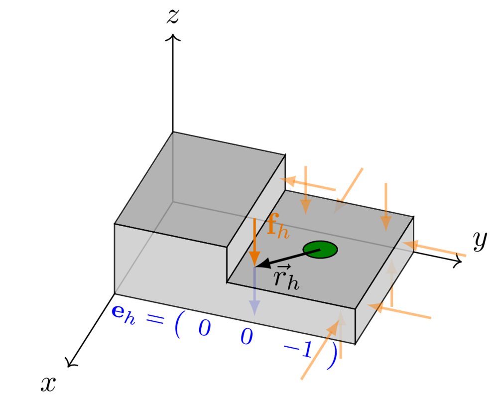
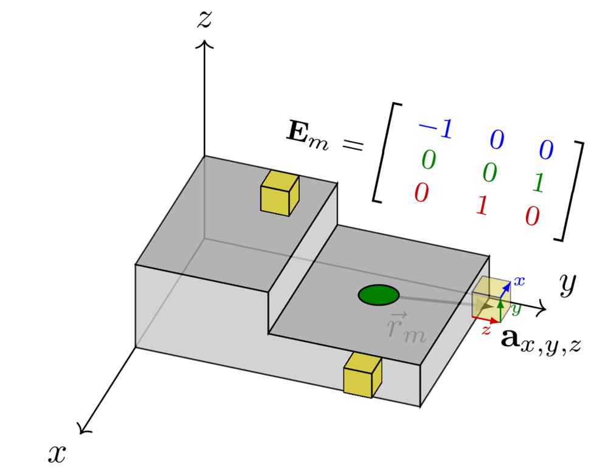
Figure 2: An interface with impact (left) and response (right) positions for virtual point transformation.
To perform the virtual point transformation, the relationship between the measured responses and the virtual point is expressed through a rigid-body transformation matrix \(\mathbf{T}_v\). This matrix relates the translational responses measured at various sensor locations \(\mathbf{v}\) to the translational and rotational degrees of freedom at the virtual point \(\mathbf{v}_{vp}\).
\[
\mathbf{v}_{vp} = \mathbf{T}_v \,\mathbf{v}
\]
To construct the transformation matrix \(\mathbf{T}_v\), the spatial locations and orientations of the sensors with respect to the virtual point must be accurately defined. In practice, it is common to use three triaxial sensors arranged around each virtual point, providing a total of nine translational measurements. For each sensor (say, sensor number \(n\) shown in Figure 2) a local transformation matrix \(\mathbf{R}_v^n\) that accounts for its position and orientation relative to the virtual point can be constructed as, \[
\mathbf{R}_v^n =
\begin{bmatrix}
e_{x,X}^n & e_{x,Y}^n & e_{x,Z}^n \\
e_{y,X}^n & e_{y,Y}^n & e_{y,Z}^n \\
e_{z,X}^n & e_{z,Y}^n & e_{z,Z}^n
\end{bmatrix}
\begin{bmatrix}
1 & 0 & 0 & 0 & r_Z^n & -r_Y^n \\
0 & 1 & 0 & -r_Z^n & 0 & r_X^n \\
0 & 0 & 1 & r_Y^n & -r_X^n & 0
\end{bmatrix}
\]
To allow for interface flexibility, additional modes can be incorporated into the \(\mathbf{R}_v^n\) matrices, specifically by adding more columns along with the existing rigid body modes. As an example, extension and torsion flexible modes will add six more columns: three extension (or strain) modes along the \(X\), \(Y\), and \(Z\) axes, and three torsion modes about these axes.
This method defines flexible interface behavior without requiring prior knowledge of the component’s dynamics, making it broadly applicable.Other flexible modes can be added with the same manner.
Having \(\mathbf{R}_v^n\) for all three sensors, we stack them vertically to construct the full transformation matrix \(\mathbf{R}_v\), which has a size of \(9 \times 6\) and relates the virtual point response to the measured translational responses,
Once the full transformation matrix \(\mathbf{R}_v\) is assembled, the virtual point transformation matrix \(\mathbf{T}_v\) can be obtained by computing the pseudo-inverse of \(\mathbf{R}_v\),
In addition to transforming the measured responses, it is also necessary to transform the excitation forces applied at several locations of the interface to their equivalent representation at the virtual point. The force transformation matrix \(\mathbf{T}_f\) converts the forces at the virtual point \(\mathbf{f}_{vp}\) to those physically applied to the interface \(\mathbf{f}\) as follows,
Considering a single impact force applied at an arbitrary location on the interface (denoted as \(\mathbf{f}^m\) in Figure 2), the corresponding six-DoF force vector at the virtual point (three translational forces and three rotational moments) can be obtained using a transformation matrix \(\mathbf{R}_f^m\). This matrix is defined based on the distance \(\mathbf{r}_f^m\) and direction \(\mathbf{e}_f^m\) of the impact force relative to the virtual point. The local transformation matrix \(\mathbf{R}_f^{m,\rm T}\) for the \(m\)th force is defined as,
Once all \(\mathbf{R}_f^m\) matrices are defined for the set of \(m = 9\) independent impact points, they are stacked to form the \(\mathbf{R}_f\) matrix,
With both transformation matrices \(\mathbf{T}_v\) and \(\mathbf{T}_f\) defined, we are now equipped to transform the measured frequency response functions (FRFs) from the surrounding sensor locations to the virtual point. By pre-multiplying \(\mathbf{T}_v\) and and post-multiplying \(\mathbf{T}_f\) to the measured FRFs \(\mathbf{Y}\), \[
\mathbf{Y}_{vp} = \mathbf{T}_v\, \mathbf{Y}\, \mathbf{T}_f^{\mathrm{T}}
\] they can be expressed in terms of translational and rotational degrees of freedom at the virtual point \(\mathbf{Y}_{vp}\).
2.2.1 Force identification
Based on the VP transformations described above, two options are available to us when estimating the blocked force, depending on whether or not we transform the response vector. Considering the VP transformation applied to both forces and responses, our blocked force estimation becomes,
where it is noted that the elements of response vector \(\mathbf{v}\) situated at the interface \(c\) have been projected onto the VP by \(\mathbf{T}_v\). Note that the transformation \(\mathbf{T}_v\) occurs twice; together this has the effect of filtering out the flexible dynamics from \(\mathbf{v}\) and inferring \(\mathbf{\bar{f}}_{vp}\) from the rigid body response only. It can be argued that this step unnecessary and in fact weakens the blocking constraints imposed (only rigid interface motions will be constrained). Omitting the response transformation entirely we have,
where \(\mathbf{\bar{f}}_{vp}\) is now defined such that both rigid and flexible interface motions are constrained.
2.3 Global–Residual Virtual Point
In this section we develop the VP theory into the proposed Global-Residual representation. We will focus on the case where interface transformations are applied only to the sought after forces, i.e. measurement/indicator DoFs are left untransformed. We are then interested in the equation,
where \(\mathbf{\bar{f}}_{vp}\) is the VP blocked force, \(\mathbf{Y}_{m,m}\) is matrix of FRFs relating the measurement DoFs, and \(\mathbf{T}_f\) is the transformation matrix that projects the measurement DoF forces onto the VP.
We seek a transformation matrix \(\mathbf{T}_f\) that separates the global (rigid body) dynamics from the local connection dynamics such that the acquired blocked force takes the form, \[
\mathbf{\bar{f}}_{vp} =
\begin{bmatrix}
\mathbf{\bar{f}}_{vp}^{g} \\
\mathbf{\bar{f}}_{vp}^{\Delta}
\end{bmatrix}
\] where \(\mathbf{\bar{f}}_{vp}^{g}\) is the force component describing the global (rigid body) source behaviour, and \(\mathbf{\bar{f}}_{vp}^{\Delta}\) the residual forces that remain at the connections when global forces are removed.
Recalling Equation 5, the response vector \(\mathbf{v}\) (indicator DoFs) can be expressed in terms of a VP at each interface connection in the standard form, \[
\mathbf{v} = \mathbf{Y}_{m,vp}\,\mathbf{f}_{vp}
\] where \(\mathbf{Y}_{m,vp} = \mathbf{Y}_{m,m}\mathbf{T}_f^{\rm T}\). In this representation, the force \(\mathbf{f}_{vp}\) contains the net forces at each connection point of the source.
This net force can be decomposed into a contribution from the rigid body dynamics (\(\mathbf{f}_{vp}^{g}\)), and the residuals (\(\mathbf{f}_{vp}^{\Delta}\)). The response at some set of measurement DoFs can then be given by, \[
\mathbf{v} =
\mathbf{Y}_{m,vp}^{g}\mathbf{f}_{vp}^{g} + \mathbf{Y}_{m,vp}^{\Delta}\mathbf{f}_{vp}^{\Delta}
=
\begin{bmatrix}
\mathbf{Y}_{m,vp}^{g} & \mathbf{Y}_{m,vp}^{\Delta}
\end{bmatrix}
\begin{bmatrix}
\mathbf{f}_{vp}^{g} \\
\mathbf{f}_{vp}^{\Delta}
\end{bmatrix}
\] where \(\mathbf{Y}_{m,vp}^g\) and \(\mathbf{Y}_{m,vp}^{\Delta}\) are the FRFs that relate the global and residual forces to the set of indicator responses. To solve the above equation we need to determine the global and residual FRFs, which amounts to finding the transformation \(\mathbf{T}_f\) that filters out the rigid body components from each connection point.
Consider the force transformations for the global and local VP representations, \[
\mathbf{f}_{vp}^{g} = \mathbf{R}_{f}^{g,\mathrm{T}}\,\mathbf{f} \qquad \mbox{and} \qquad
\mathbf{f}_{vp} = \mathbf{R}_{f}^{\mathrm{T}}\,\mathbf{f}
\tag{6}\] where \(\mathbf{f}_{vp}^g\) and \(\mathbf{f}_{vp}\) are the transformed global (RB) and local VP forces. Note that \(\mathbf{R}_f^{\rm T}\) is a matrix that projects the forces applied around each connection point to their corresponding VP, whilst \(\mathbf{R}_f^{g, {\rm T}}\) projects the same set of forces instead onto a single VP placed at some arbitrary position, most likely within the source.
To obtain a transformation for the residual VP forces, \(\mathbf{f}_{vp}^{\Delta}\), we need to remove the rigid body contributions from the local VP representation. This can be done by first projecting the global forces \(\mathbf{f}_{vp}^g\) back onto the measurement set, \[
\mathbf{f}' = \underbrace{\mathbf{R}_{f}^{+g,\mathrm{T}}\,\mathbf{R}_{f}^{g,\mathrm{T}}}_{\mathbf{F}_{f}^{g}}\,\mathbf{f}
\] where \(\mathbf{F}^g_f\) is the rigid body filtering matrix and \(\square'\) denotes a rigid body filtered quantity. Next, we subtract the rigid body contributions from the initial forces before projecting them onto the local VP, \[
\mathbf{f}_{vp}^{\Delta} = \mathbf{R}_{f}^{\mathrm{T}} \big( \mathbf{f} - \mathbf{f}' \big)
= \mathbf{R}_{f}^{\mathrm{T}} \big( \mathbf{I} - \mathbf{F}_{f}^{g} \big)\, \mathbf{f}
\tag{7}\] The resulting force \(\mathbf{f}_{vp}^\Delta\) is the residual component of the local VP, with the rigid body/global component removed.
Rearranging Equation 6 and Equation 7 above obtain equations for \(\mathbf{f}\), \[
\mathbf{f} = \mathbf{R}_f^{+g, {\rm T}} \mathbf{f}_{vp}^g = \mathbf{T}_f^{g, {\rm T} }\mathbf{f}_{vp}^g
\]\[
\mathbf{f} = \left[\mathbf{R}_f^{\rm T}\left(\mathbf{I}-\mathbf{F}^g_f\right)\right]^+ \mathbf{f}_{vp}^\Delta
\] from which we can identify the necessary transformations to separate the measured FRF matrix into its global and residual components, \[
\mathbf{v} = \mathbf{Y}_{m,m}
\begin{bmatrix}
\mathbf{T}_{f}^{g,\mathrm{T}} &
\big[ \mathbf{R}_{f}^{\mathrm{T}} ( \mathbf{I} - \mathbf{F}_{f}^{g} ) \big]^{+}
\end{bmatrix}
\begin{bmatrix}
\mathbf{f}_{vp}^{g} \\
\mathbf{f}_{vp}^{\Delta}
\end{bmatrix}.
\tag{8}\]
3 Experimental Study
This experimental study aims to evaluate the Global-Residual Virtual Point as an interface representation for estimating the blocked force of a heavy industrial machine under different boundary conditions. The test object is a one-ton stamping press mounted on an inertial block. The machine is supported at three distinct feet Figure 3. Two boundary conditions are considered: (1) a rigid interface with steel blocks beneath each foot, and (2) a resilient interface using Isomat BR70 rubber manufactured by Farrat Isolevel Ltd. To characterize the dynamic behaviour at the interface, nine triaxial accelerometers (PCB 356A) are used (three per foot). Additionally, two single-axis accelerometers (PCB 393B05) were positioned on the inertial block, away from the feet, serving as remote points to perform onboard validation of the blocked forces. A large modal impact hammer (B&K type 8207) was used to excite the system at multiple locations on each foot. For each foot, three impacts were delivered in each Cartesian direction (\(X\), \(Y\), \(Z\)), resulting in 9 impacts per foot and a total of 27 impacts across the three feet. All measurements were acquired using DEWEsoft SIRUS acquisition system.
The experimental procedure consisted of two primary phases: passive and active characterization. In the passive phase, acceleration FRFs were obtained using a large modal impact hammer.
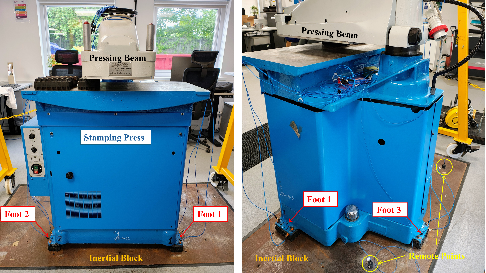
Figure 3: Experimental setup of the one-ton stamping press mounted on an inertial block for blocked-force identification. The press is supported on three discrete feet (Foot 1–Foot 3) seated on a rigid inertial block. Two single-axis accelerometers mounted on the inertial block serve as remote validation points.
In the active phase, the machine was operated under normal working conditions to capture its dynamic response at the interface and remote points. During operation, the machine’s internal compressor remained active continuously, representing a persistent background excitation. The primary operational event was triggered by two safety buttons that, when pressed simultaneously, activated the stamping press. This caused the pressing beam to deliver a high-energy impact onto the material below. This pressing action was repeated constantly throughout the test. The resulting operational accelerations were recorded at the interfaces and at the remote points on the inertial block.
Following the active and passive characterization steps, the Virtual Point Transformation was applied to estimate the blocked forces. For this purpose, three VP representations were considered, i.e., individual VP (I-VP), global VP (G-VP), and global-residual VP (GR-VP). For the I-VP case, a single virtual point is defined on each foot, leading to a total of 18 DoFs. For the G-VP, a single VP is defined at the machine’s geometric centre, leaving just 6 DoFs in total (note that the measurements at all feet are projected onto the G-VP). For the GR-VP, the G-VP is accompanied by a residual VP at each foot, giving a total of 24 DoFs. Recall that the residual VPs are defined in such a way that the G-VP dynamics have been removed (see Equation 8); they describe the linearly uncorrelated interface dynamics.
Note that for each representation, only the measured forces are transformed; the interface FRF matrices used to compute the blocked force thus have the dimensions: \(\mathbf{Y}_{Ccc}^{\rm I\mbox{-}VP} \in \mathbb{C}^{27\times 18}\), \(\mathbf{Y}_{Ccc}^{\rm G\mbox{-}VP} \in \mathbb{C}^{27\times 6}\), and \(\mathbf{Y}_{Ccc}^{\rm GR\mbox{-}VP} \in \mathbb{C}^{27\times 24}\).
3.1 Resilient connection
We consider first the resiliently coupled case. Shown in ?@fig-coh_res is the average coherence across all FRFs (including both interface and validation DoFs) for the resiliently coupled system. Given the heavy weight nature of this assembly, we see poor coherence in the low frequency range, below approx. 10 Hz. For this reason, in what follows we will only present results between 10-1500 Hz.
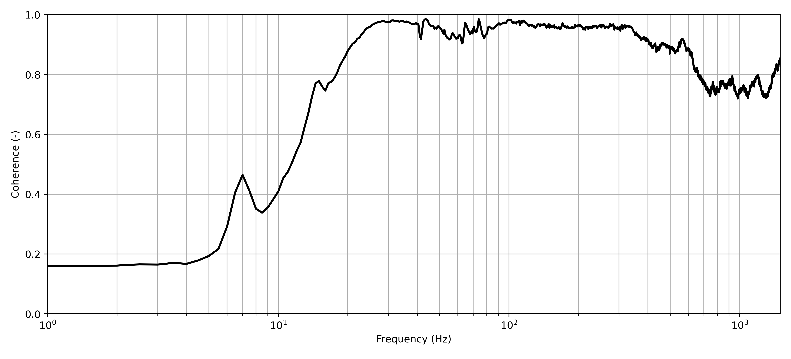
Figure 4: Average coherence across all measurements for resiliently mounted source.
Figure 5 shows the time averaged blocked force maps for each representation; from left to right we have the I-VP, G-VP and GR-VP. In each subplot the DoFs 1-6 correspond to the G-VP defined at the machine centre, whilst the DoFs 7-24 are those defined locally at the centre of each foot. These local DoFs are ordered as, \[
\left(\begin{array}{cccccc|cccccc|cccccc}x_1& y_1 & z_1 & \alpha_1& \beta_1& \gamma_1 & x_2& y_2& z_2& \alpha_2& \beta_2& \gamma_2& x_3& y_3& z_3&\alpha_3& \beta_3& \gamma_3\end{array}\right)
\] where the subscript denotes the foot.
Inspecting the force maps we see in the I-VP considerable variation across the individual DoFs, in particular between the translational and rotational DoFs. This is expected on account of their different units. We see that in the GR-VP this variation is much reduced; it is suspected that the translational part of each I-VP is largely accounted for by the G-VP, and so the residual is of a much lower magnitude. The G-VP reveals the expected result that in the low frequency range (where the G-VP is considered appropriate), the vertical force (i.e. in the direction of the machine stamping) is of the greatest magnitude.
It should be noted that in the GR-VP case, a singular value truncation is used; 18 singular values are retained based on the notion that the the I-VPs implicitly capture the G-VP dynamics, and so by separating the global and residual terms, no additional information is added. We therefore limit the number of singular values in the GR-VP representation to the same as the I-VP.
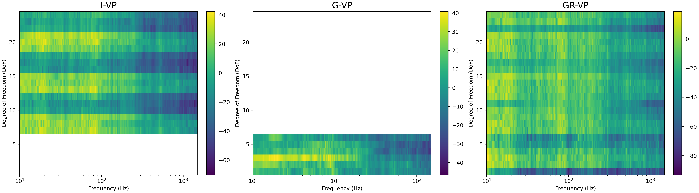
Figure 5: Force maps for the time averaged blocked force obtained using; individual VPs (I-VP left), global VP (G-VP middle) and global-residual (GR-VP right).
To validate the blocked forces we use the standard onboard validation approach, whereby the blocked forces are used to make a response prediction within the attached receiver. Whilst the onboard validation is a somewhat limited test of the blocked force, modification or replacement of the receiver was not possible within this case study. Shown in Figure 6 and Figure 7 are the narrowband and 1/3rd octave-band onboard validation predictions for the two remote sensors. In all three cases we see a reasonable level of predictive accuracy. A surprising result is the apparent success of the G-VP representation in the mid-high frequency range. This supports the notion that the G-VP representation, though accurately capturing the low frequency rigid-body dynamics, in fact captures the dynamics across the entire frequency range.
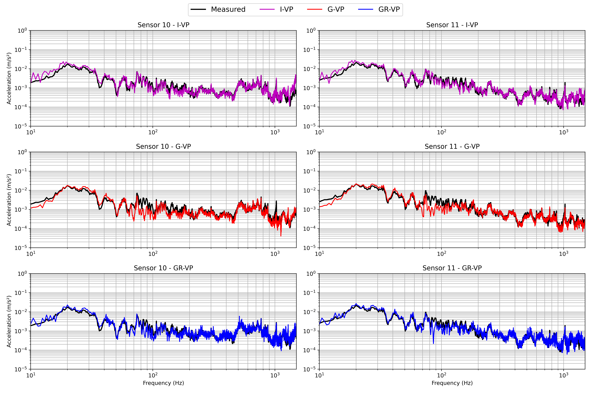
Figure 6: On-board validation results in narrow band for two remote sensors using each of the interface representations; individual VPs (I-VP top), global VP (G-VP middle) and global-residual (GR-VP bottom).
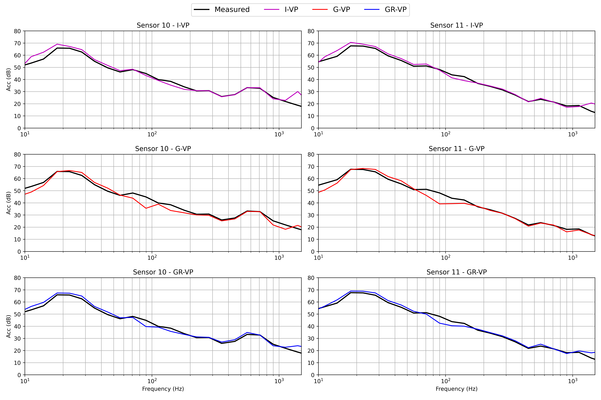
Figure 7: On-board validation results in 1/3rd octave bands for two remote sensors using each of the interface representations; individual VPs (I-VP top), global VP (G-VP middle) and global-residual VPs (GR-VP bottom).
To better judge the performance of each representation, in Figure 8 we plot the 1/3rd octave-band errors compared against the directly measured response. We see that all three methods remain below 5dB error across the majority of the frequency range. It appears that the G-VP out performs I-VP in the lowest part of the response (i.e.below approx 30 Hz). This is likely because a) the source is behaving rigidly and so the G-VP completely captures its dynamics and b) the G-VP yields a smaller matrix, less sensitive to ill conditioning and sensitivities in the matrix inversion. In the mid frequency range the I-VP out performs the G-VP which begins to see its largest errors. This is likely due to the source exhibiting some flexibility not captured by the G-VP. Again, as previously noted we see that the G-VP begins to out perform the I-VP in the upper end of the frequency range. We suspect the reason for this is as follows; at high frequencies the individual feet are uncorrelated with one another and as a result can readily be collapse into a single equivalent rigid-body force. This is commensurate with the idea of using power-based methods at high frequencies, where increasing modal complexity in fact leads to simpler dynamical relations, e.g. as in Statistical Energy Analysis.
Considering now the GR-VP error, we see that it is comparable to the I-VP and G-VP, and tends to lie between the two. In Figure 8 we also plot the GR-VP error when no singular value truncation is used in the blocked force solution; this is likely due to the GR-VP acting as a DoF expansion, and the resulting matrix being rank deficient/ill-conditioned.
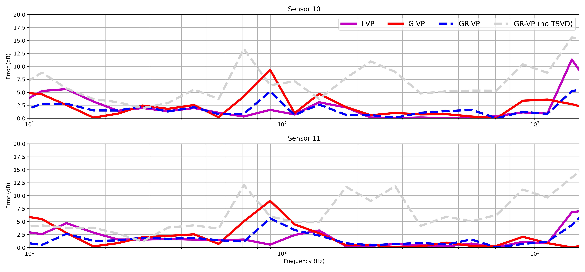
Figure 8: 1/3rd octave band error plots for on-board validation. The GR-VP representation in blue uses a TSVD with 18 singular values. Shown in gray is the error plot for the GR-VP without TSVD.
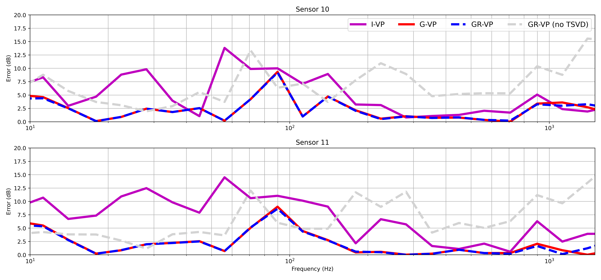
Figure 9: 1/3rd octave band error plots for on-board validation. The I-VP and GR-VP representations use a TSVD with 6 singular values.
Recalling the rational of the GR-VP – to factor out the rigid-body (or linearly correlated) dynamics with the aim of improving interpretability of the interface dynamics – it will prove interesting to consider the truncation of both the I-VP and GR-VP representations to just 6 singular values. By doing so, each representation is reduced to contain only the most important (in terms of explanation of variance) information. The resulting errors are presented in Figure 9. Comparison against previous errors in Figure 8 we identity two key results; 1) the I-VP error has increased significantly across almost the entire frequency range, whilst 2) the GR-VP error has tended towards that of the G-VP. This latter result implies that the 6 most dominant singular values in the GR-VP are closely related to the G-VP DoFs, making them both more interpretable and expressive than those of the I-VP. Based on this result, later in Section 3.3 we will breifly investigate whether the GR-VP representation might be well suited to a best sub-set selection procedure; the first 6 G-VP DoFs would always be retained, and the selection procedure applied to the remaining residuals.
3.2 Rigid connection
We now consider the results obtained from the rigidly coupled assembly. Shown in Figure 10 is the average coherence across all FRFs (including both interface and validation FRFs) for the rigidly coupled case. As expected, compared to the resilient case the rigid FRFs are affected to a greater extent by noise, especially at low frequencies. We can see that only from approx 50 Hz do we begin to get reasonable measurement quality. Therefore, hereafter we will only present results between 50-1500 Hz.
Figure 11 - Figure 15 are structured in the same way as for the resilient case, and largely lead to the same conclusions. Perhaps the main difference is that for the rigid case, the G-VP does not perform quite as well. This is likely because the rigid-body blocked forces occur mostly below the frequency range considered (i.e. within the noise floor). As before, in the high frequency range we see that the G-VP produces relatively low errors considering its simplicity, performing slightly better than the I-VP. The GR-VP error is seen to mostly follow that of the I-VP when 18 singular values are retained. Reducing this to 6, the GR-VP errors begins to follow the G-VP error. This again supports the notion that the dominant singular values of the GR-VP representation are related to the rigid-body (linearly correlated) interface dynamics. In contrast, I-VP error is seen to increase dramatically when only 6 singular values are retained.
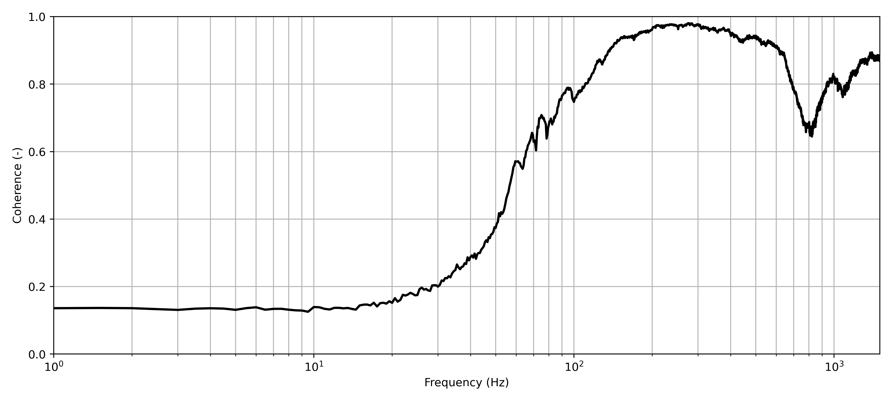
Figure 10: Average coherence across all measurements for rigidly mounted source. Useable frequency range: 50-1500 Hz.
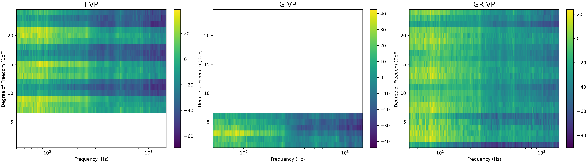
Figure 11: Force maps for the time averaged blocked force obtained using; individual VPs (I-VP left), global VP (G-VP middle) and global-residual (GR-VP right).
Perhaps the main conclusion from the above results is that the G-VP (and by extension first 6 DoFs of the GR-VP) appears to provide a better representation of the interface dynamics than the 6 most dominant singular values of the conventional I-VP representation. This begs the question whether a more interpretable solution with lower error could be obtained from the GR-VP by utilising a subset selection scheme. The idea would be to always retain the G-VP DoFs within the GR-VP (which have been shown to out perform I-VP at low and high frequencies), whilst using a selection procedure to determine which residual DoFs to include in the solution. We briefly consider this approach in the following section, though a more in depth and general study of subset selection in the context of blocked force identification is considered beyond the scope of this paper.
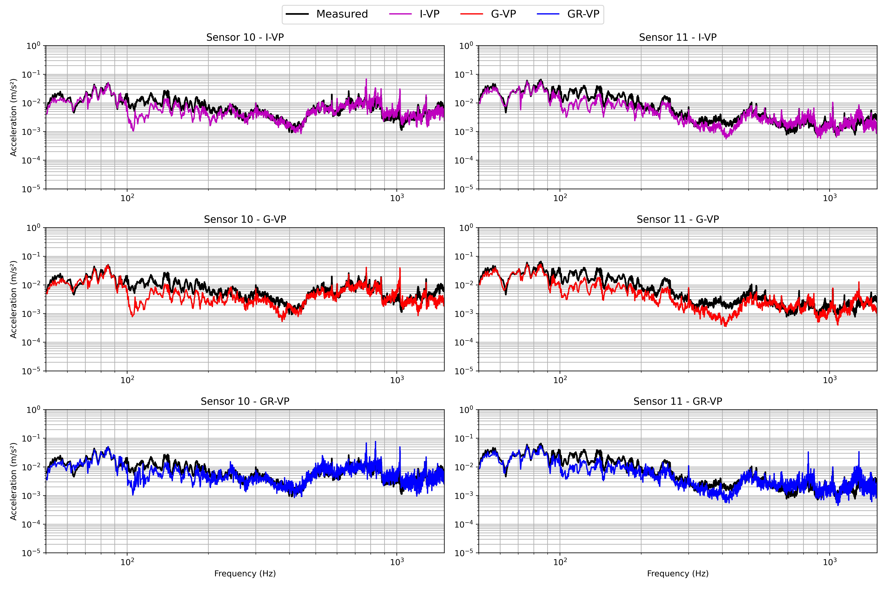
Figure 12: On-board validation results in narrow band for two remote sensors using each of the interface representations; individual VPs (I-VP top), global VP (G-VP middle) and global-residual (GR-VP bottom).
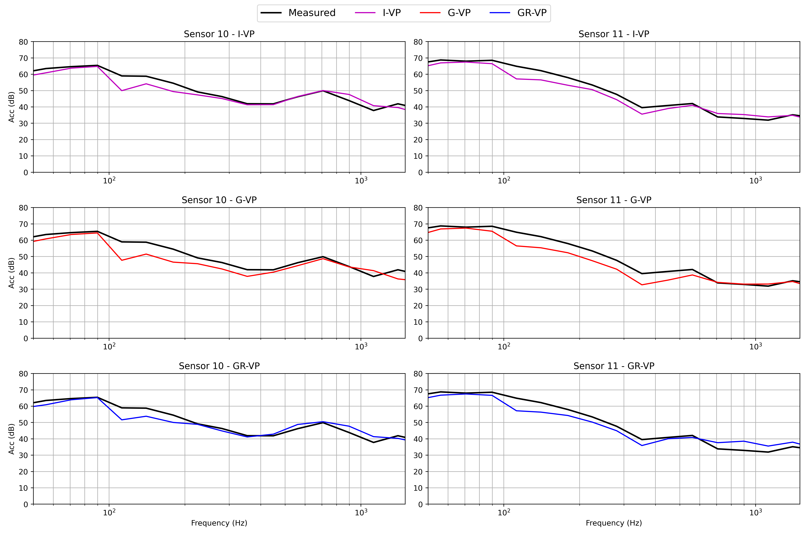
Figure 13: On-board validation results in 1/3rd octave bands for two remote sensors using each of the interface representations; individual VPs (I-VP top), global VP (G-VP middle) and global-residual VPs (GR-VP bottom).
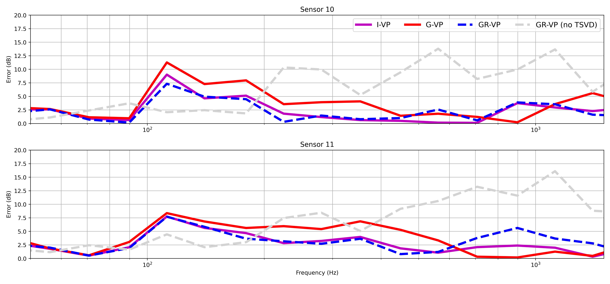
Figure 14: 1/3rd octave band error plots for on-board validation. The GR-VP representation in blue uses a TSVD with 18 singular values. Shown in gray is the error plot for the GR-VP without TSVD.
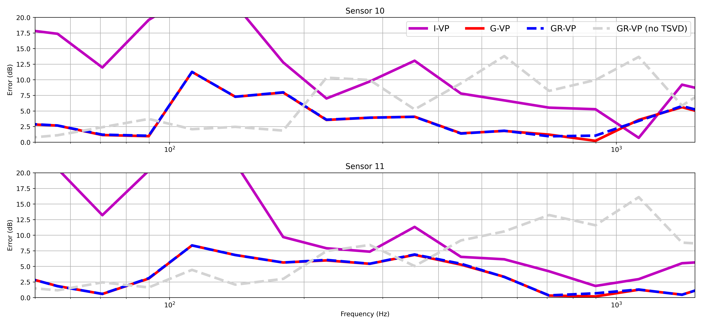
Figure 15: 1/3rd octave band error plots for on-board validation. The I-VP and GR-VP representations use a TSVD with 6 singular values.
3.3 GR‑VP Subset Selection
Best subset selection is a solution strategy for over-parametrised linear problems. It’s aim is to find a reduced set of parameters that adequately satisfy the underlying systems of equations with respect to some chosen error metric. Though well established in disciplines such as signal processing (i.e. compressive sensing), it has only recently been proposed for in-situ blocked force estimation [16]. An argument for its use in this context is that whilst an interface might be represented by a complete set of interface DoFs, at a given frequency only a reduced subset of these DoFs are active. Including non-contributing DoFs can lead to ill-conditioned, or over-parametrized, interface models and large errors on the identified blocked forces. Subset selection aims to identify a reduced set of interface DoFs that provide better predictive accuracy whilst also benefiting from improved interpretability.
A variety of subset selection procedures exist and the time of writing there is no consensus as to which is most appropriate for blocked force identification. In this paper we employ an orthogonal least squares approach [17]. Also termed sequential forward selection, this method has been applied to blocked force identification in [13], where it was termed X-DoF.
The procedure starts by defining an empty set \(\Gamma_0 = \{\}\) as the set of indices corresponding to non-zero elements in \(\mathbf{f}\) (i.e. all elements in \(\mathbf{f}\) are initially zero). In the \(k\)th step of the procedure, a single index \(i_{max}\) is added to the set \(\Gamma_{k-1}\), which meets the criterion, \[
i_{max} = \underset{i}{\mbox{argmin}} ||\overbrace{\mathbf{v} - \mathbf{Y}_{\Gamma_{k-1}^i} \mathbf{Y}_{\Gamma_{k-1}^i}^+ \mathbf{v}}^{\mathbf{r}_k}||_2^2 \quad \mbox{with} \quad \Gamma_{k-1}^i = \Gamma_{k-1} \cup i
\] where \(\mathbf{Y}_{\Gamma_{k-1}^i}\) is defined as the matrix containing the columns of \(\mathbf{Y}\) corresponding to the non-zero indices in \(\Gamma_{k-1}^i\). Effectively, we add the index that minimises the error on the current response reconstruction, i.e. the residual \(\mathbf{r}_k\).
In contrast to an exhaustive BSS, orthogonal least squares reduces the total number of evaluations from \(2^n\) to \(n+(n-1)+\cdots+2+1=\frac{n(n+1)}{2}\). In each step of the algorithm a candidate solution is produced that contains an increasing number of DoFs. Once all iterations have been completed, the final step is to perform a model selection, i.e. pick from the set of candidate solutions based on an appropriate error metric. Our implementation of this algorithm is given in the code block below.
Code: Sequential forward selection function used for BSS approximation
def forwardSelection(start_dofs, select_dofs, Y_ind, Y_val, u_ind, u_val):''' Forward selection algorithm (same as Orthogonal Least Squares, OLS) - iteratively add one DoF at a time to the solution - added DoF is the one that gives the smallest error start_dofs - initial DoF array select_dofs - DoFs to be selected Y_ind - indicator-interface FRF matrix Y_val - interface-validation FRF matrix u_ind - indicator responses u_val - validation responses ''' λ_range = select_dofs.shape[0] # Number of DoFs to iterate over blkF_final = np.zeros((Y_ind.shape[0], Y_ind.shape[2], u_ind.shape[2]), dtype=complex) # Final blocked force after model selection blkF_all = np.zeros((Y_ind.shape[0], λ_range+1, Y_ind.shape[2], u_ind.shape[2]), dtype=complex) # Blocked force for all models error_all = np.zeros((Y_ind.shape[0], λ_range+1)) # Error for each model - used to perform model selectionfor fi in tqdm(range(Y_ind.shape[0]), desc="Computing solutions"): # Loop over frequencies Γ = start_dofs # Selection indices: initialised as starting DoFs [0,1,2,3,4,5] Γ_ = select_dofs # Remaining DoFs: [6,7,8,...]# ind = 0 # Model indexfor i inrange(λ_range+1): # Loop over models; i.e. number of select_dofs error = [] if i ==0: # Compute blocked force using initial DoFs OLS_block_force = np.einsum('ij,jk->ik', invSVD(Y_ind[fi][:, Γ.astype(int)], 24), u_ind[fi, :, :]) obVal = np.einsum('ij,jk->ik', Y_val[fi][:, Γ.astype(int)], OLS_block_force) error_all[fi, i] = np.linalg.norm(u_val[fi,:,:].flatten() - obVal.flatten(), ord=2) blkF_all[fi, i, Γ.astype(int), :] = OLS_block_forceelse:for N in Γ_: # Loop over remaining DoFs Γ_i = np.sort(np.append(Γ, N)) # Append current DoF to list of selected DoFs# Compute blocked force solution using previous 'i' iteration DoFs and current 'N' iteration DoF: OLS_block_force = np.einsum('ij,jk->ik', invSVD(Y_ind[fi][:, Γ_i.astype(int)], 24), u_ind[fi, :, :])# Compute onboard validation and error metric obVal = np.einsum('ij,jk->ik', Y_val[fi][:, Γ_i.astype(int)], OLS_block_force) error.append(np.linalg.norm(u_val[fi,:,:].flatten() - obVal.flatten(), ord=2)) Γ_min = np.argmin(np.asarray(error)) # Find which new DoF index gives smallest error Γ = np.sort(np.append(Γ, Γ_[Γ_min])) # Add corresponding DoF value (not index) to DoF set Γ_ = np.delete(Γ_, Γ_min) # Remove this DoF index from the remaining DoF set error_all[fi, i] = np.min(error) # Find index for lowest error from current models with M DoFs blkF_all[fi, i, Γ.astype(int), :] = np.einsum('ij,jk->ik', invSVD(Y_ind[fi][:, Γ.astype(int)],24), u_ind[fi, :, :]) # Compute blocked force for the lowest error model min_model_error = np.argmin(error_all[fi,:]) # Find the model with the lowest error (model selection) blkF_final[fi, Γ.astype(int), :] = blkF_all[fi, min_model_error, Γ.astype(int)] # Select the corresponding blocked forcereturn blkF_final, error_all
With the purpose of subset selection being to identify sparse solutions, if two candidate models produce the same error, the one with fewer non-zero elements is typically chosen. To this end, it is common practice to use for model selection an error metric that takes into account the complexity of the solution (i.e. the number of non-zero elements), see for example in [13]. In our brief investigation here, we omit this step and use the standard mean-squared-error to perform model selection.
To validate a model selection it is good practice to use a novel data set that was not used in the selection procedure itself. In our study, limited channel count has meant that this was not possible. Hence, the model selection was based on the onboard validation errors, with no further validation available. Whilst this is not the most robust approach to model selection, we believe it sufficient to demonstrate the potential application of subset selection applied to the GR-VP and to promote further research on this application.
One final remark with regards to our implementation of the forward selection, it is noted that rather than starting with the empty solution, as is done is a typical forward selection, for the GR-VP representation we start by including all G-VP DoFs; the selection procedure is applied to the residual DoFs only. For the I-VP we start in the usual way with an empty solution.
3.3.1 Resilient connection (BSS)
Shown in Figure 16 are the blocked forces obtained from the resiliently coupled source for both the I-VP and GR-VP representations using the sequential forward selection described above. For both cases an onboard validation MSE is used for model selection.
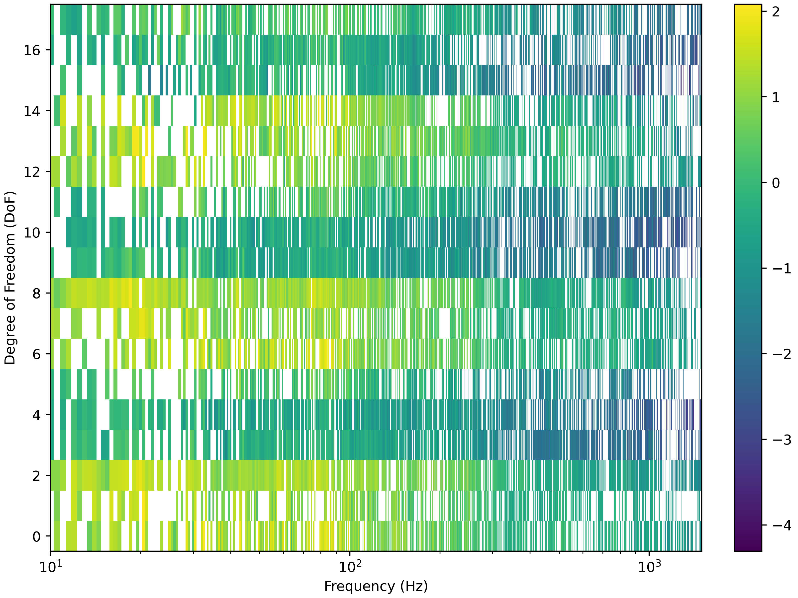
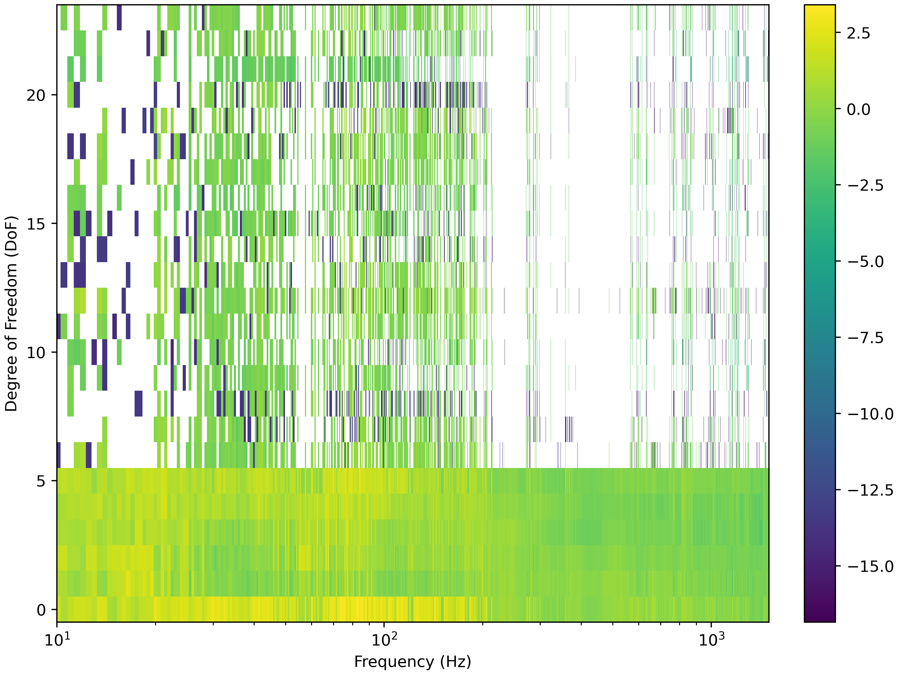
Figure 16: Blocked force map obtained from resilient assembly using sequential forward selection with MSE model selection using VP (left) and GR-VP (right).
We see that in both cases a sparse solution is obtained in preference to a ‘full’ solution, though the resulting sparsity patterns differ greatly. Inspecting the I-VP forces, we see a slight increase in sparsity in the low frequency range, likely on account of the rigid-body dynamics being dominant in this range. In the mid-high frequency range the forces, though remaining somewhat sparse, behave erratically ‘turning on and off’ rapidly over frequency with little to no identifiable trends. Lastly, we see that across the majority of the frequency range, the \(z\) DoF of each VP is kept active. This is expected as the main excitation mechanism of the source acts in this direction.
Inspecting the GR-VP forces, we see that similarly in the low frequency range the solution is relatively sparse, with the majority of residual terms being set to 0. This is in-agreement with the notion that at low frequencies the rigid body forces are largely captured by the retained G-VP. In contrast to the I-VP, the GR-VP produces a sparse solution also in the high frequency range. This is in keeping with the notion that at high frequencies the residual terms become uncorrelated and can therefore be described by an equivalent single point representation. In the mid frequency range, where the source is suspected to deform flexibly with low modal density, the solution is rather dense with many of the residual terms being active.
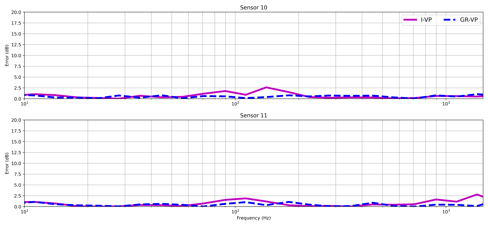
Figure 17: O1/3rd octave band error plots of the on-board validation for the I-VP and GR-VP representation using forward selection.
Based on the force maps shown in Figure 16, Figure 17 presents the onboard validation error for the sparse I-VP and GR-VP solutions. For both cases we see a significant reduction in the error across all frequencies compared to Figure 8. This illustrates the potential benefit of a sparse BSS solution. Of the two solutions we see that the GR-VP generally out performs the I-VP.
3.3.2 Rigid connection (BSS)
Shown in Figure 18 are the blocked forces obtained from the rigidly coupled source for both the I-VP and GR-VP representations using the sequential forward selection described above. As before, for both cases an onboard validation MSE is used for model selection.
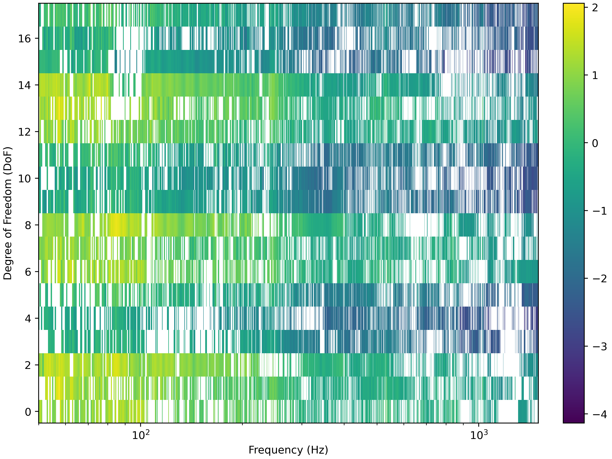
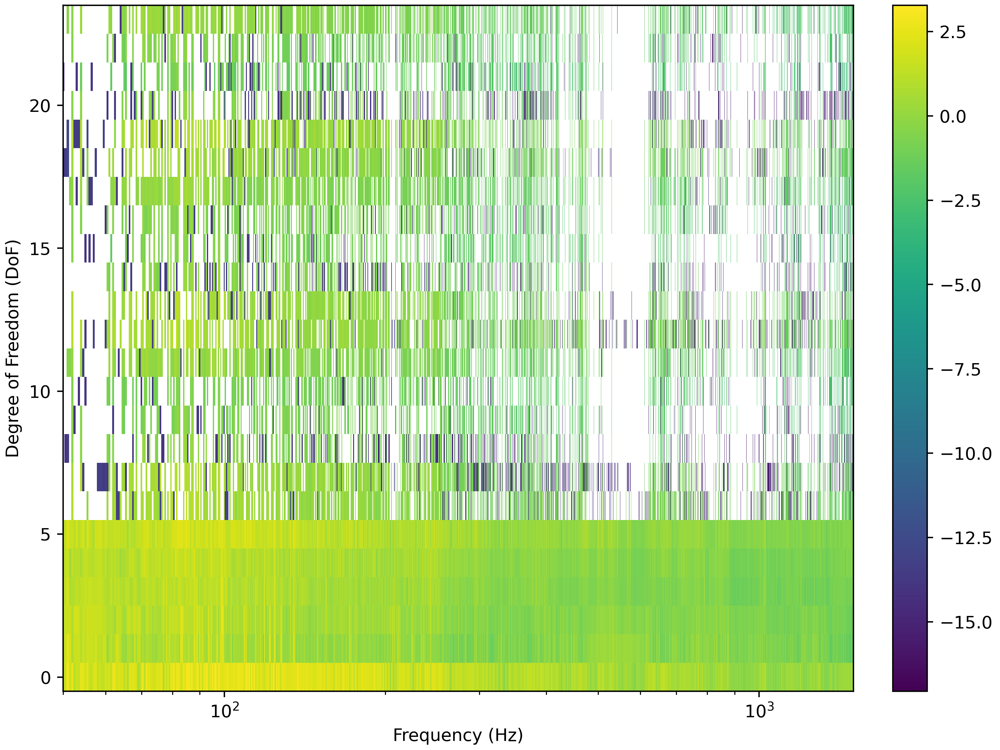
Figure 18: Blocked force map obtained from rigid assembly using sequential forward selection with MSE model selection using VP (left) and GR-VP (right).
The rigid force maps bare some similarities to the resilient case in Figure 16, especially for the GR-VP case. For the I-VP we see some increased sparsity in the high frequency range with reduced sparsity in the frequency range. This reduction in sparsity at low frequencies is likely due to the rigid body dynamics occurring outside of the frequency range considered, i.e. within the noise floor.
With regards to the GR-VP we draw the same general conclusions as before; at low and high frequencies the interface is well described by just the G-VP DoFs, whilst in the mid frequency range the residual DoFs provide important contributions.
Inspecting the onboard validation errors in Figure 19 we see similar, though perhaps not great, reductions in the error, again with the GR-VP generally out performing the I-VP.
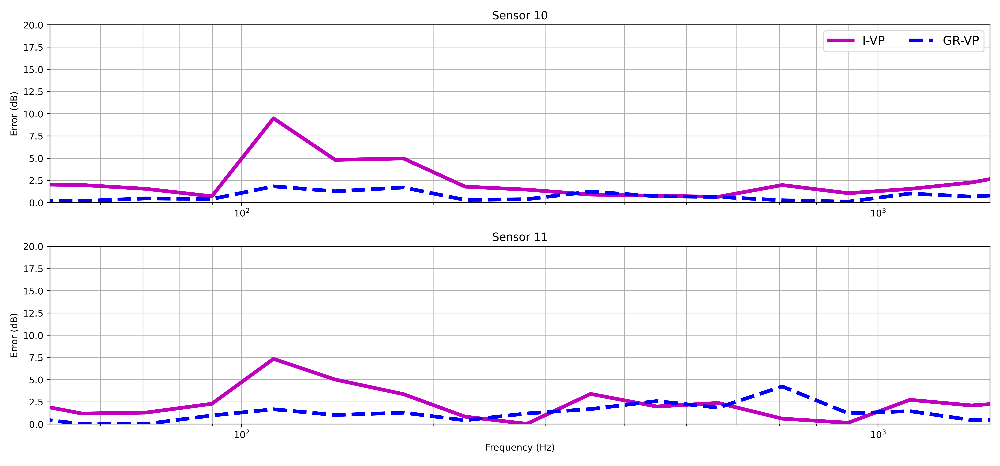
Figure 19: 1/3rd octave band error plots for the on-board validation of the I-VP and GR-VP representations with forward selection.
In the above we limited our frequency range to >50 Hz, on account of the noise floor dominating below this (see Figure 10). Inspecting the error plots below 50 Hz, as in Figure 20, illustrates a further potential benefit of the GR-VP representation. As expected, we see that the I-VP error increases significantly below \(50\) Hz, up to 17.5 dB at 10 Hz. The GR-VP error remains below 3 dB down to 10 Hz. The suspected reasons for this massive reduction in error are two fold: 1) the fact that the G-VP DoFs are estimated based on all interface measurements makes them massively over-determined, thus reducing sensitivity to error and b) the reduced matrix size as a result of the forward selection (i.e. retaining mostly just the G-VPs) reduces the amplification of uncertainty when the inverse is performed.
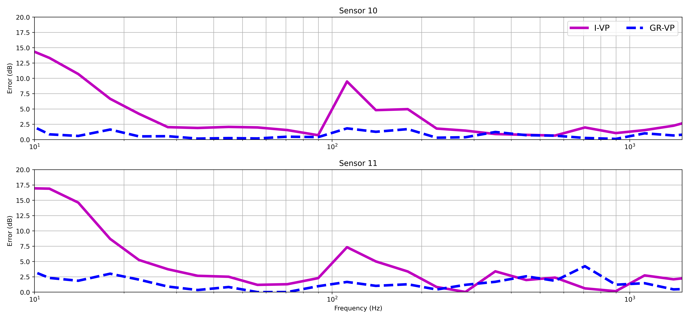
Figure 20: Extended frequency range: 1/3rd octave errors below 50 Hz for I‑VP vs GR‑VP with forward selection.
4 Conclusion
In this paper we have introduced a new interface representation for TPA-based force identification problems, such as the in-situ blocked force method. Termed the Global–Residual Virtual Point (GR‑VP), our approach is based on the separation of global rigid-body (or more precisely, linearly correlated) dynamics from local (uncorrelated) interface dynamics. To do so, all interface forces are first projected onto a global VP placed within the source. These global dynamics are then projected back onto the interface where they are subtracted from the initial forces, leaving behind a set of residuals. These residual subsequently projected onto a series of local VPs. Together, the global VP and local residual VPs form our proposed GR-VP interface representation.
To verify the GR-VP representation we consider the blocked force characterisation of a heavy weight stamping press under resilient and rigid interface conditions. Comparisons are made against: 1) a conventional interface representation where an individual VP (I-VP) is assigned to each connection, and 2) the use of a single global VP (G-VP). Onboard validation results indicate that the GR-VP performs similarly to the I-VP; an expected result as the GR-VP does not contain any more information than the I-VP representation. The main advantage of the GR-VP is interpretation. We see that in the 6 most dominant singular values the GR-VP capture the linearly correlated dynamics of the source, yielding relatively low errors on par with the G-VP. For the same level of singular value truncation, the I-VP leads to considerably larger errors, implying that the GR-VP is able to provide a better representation of the interface given the same amount of ‘information’.
Based on the above observations, we investigate the combined application of GR-VP with best subset selection (specifically, sequential forward selection) to identify improved blocked force models with reduced errors. Though our investigation is brief and in need of further verification, it appears that by retaining all G-VP DoFs and selectively including specific residual GR-VP DoFs, interpretable blocked force models can be obtained with a significant reduction in error. An interesting observation from this subset selection (also the previous onboard validation results) is that in the high frequency range, where one would expect more residual DoFs to be necessary, the opposite is found. The G-VP DoFs alone are able to describe the source with an onboard validation error lower than the I-VP. We hypothesises that this is a result of a) the individual connections becoming uncorrelated with one another and the resulting forces readily collapsing into a single equivalent rigid-body force, and b) the smaller matrix inversion having a reduced amplification of error.
Similar benefits where observed in the very low frequency range; where the conventional I-VP is overcome by noise floor issues, the GR-VP maintains a relatively low error (<3 dB). This is likely on account of the G-VPs being massively over-determined as compared to the I-VPs which use only local dynamics.
In summary, the Global-Residual interface representation appears to have some potential for the improved identification of forces in TPA. At the moment our study is limited to a single heavy weight assembly, which is itself subject to several experimental challenges. Additional experimental studies on a range of assembly types are required for further verification for the method, particularly in combination with best subset selection.
Acknowledgements
This work was funded by Innovate UK through the Knowledge Transfer Partnership scheme (project reference 10008155) in collaboration with Farrat Isolevel Ltd.
References
[1]
J. Meggitt and A. Moorhouse, Experimental vibro-acoustics: In situ and blocked force methods for component-based simulation and virtual prototyping. CRC Press, 2025.
[2]
H. Inoue, J. J. Harrigan, and S. R. Reid, “Review of inverse analysis for indirect measurement of impact force,”Applied Mechanics Reviews, vol. 54, no. 6, pp. 503–524, 2001.
[3]
J. Plunt, “Finding and fixing vehicle NVH problems with transfer path analysis,”Sound and vibration, vol. 39, no. 11, pp. 12–17, 2005.
[4]
H. Van der Auweraer, P. Mas, S. Dom, A. Vecchio, K. Janssens, and P. Van de Ponseele, “Transfer path analysis in the critical path of vehicle refinement: The role of fast, hybrid and operational path analysis,” 2007.
[5]
A. Moorhouse, A. Elliott, and T. Evans, “In situ measurement of the blocked force of structure-borne sound sources,”Journal of sound and vibration, vol. 325, no. 4–5, pp. 679–685, 2009.
[6]
D. de Klerk, D. Rixen, S. Voormeeren, and F. Pasteuning, “Solving the RDoF problem in experimental dynamic substructuring,” in Proceedings of the twentysixth international modal analysis conference, orlando, FL, 2008.
[7]
A. R. Mayr and B. Gibbs, “Single equivalent approximation for multiple contact structure-borne sound sources in buildings,”Acta Acustica united with Acustica, vol. 98, no. 3, pp. 402–410, 2012.
[8]
A. Elliott, A. Moorhouse, and G. Pavić, “Moment excitation and the measurement of moment mobilities,”Journal of sound and vibration, vol. 331, no. 11, pp. 2499–2519, 2012.
[9]
H. Bonhoff and B. Petersson, “The influence of cross-order terms in interface mobilities for structure-borne sound source characterization,”Journal of sound and vibration, vol. 329, no. 16, pp. 3280–3303, 2010.
[10]
M. V. Van Der Seijs, D. D. Van Den Bosch, D. J. Rixen, and D. De Klerk, “An improved methodology for the virtual point transformation of measured frequency response functions in dynamic substructuring,” in 4th ECCOMAS thematic conference on computational methods in structural dynamics and earthquake engineering, 2013.
[11]
E. Pasma, M. van der Seijs, S. Klaassen, and M. van der Kooij, “Frequency based substructuring with the virtual point transformation, flexible interface modes and a transmission simulator,” in Dynamics of coupled structures, volume 4: Proceedings of the 36th IMAC, a conference and exposition on structural dynamics 2018, Springer, 2018, pp. 205–213.
[12]
J. O. Almirón, F. Bianciardi, and W. Desmet, “Flexible interface models for force/displacement field reconstruction applications,”Journal of Sound and Vibration, vol. 534, p. 117001, 2022.
[13]
P. E. Bofinger, J. Boelens, S. W. Klaassen, and D. De Klerk, “X-DoF: Automatic degree-of-freedom subset selection for inverse blocked force characterization,”Journal of Vibration and Acoustics, vol. 147, no. 1, 2025.
[14]
J. Meggitt and A. Moorhouse, “On the completeness of interface descriptions and the consistency of blocked forces obtained in situ,”Mechanical Systems and Signal Processing, vol. 145, p. 106850, 2020.
[15]
P. C. Hansen, “The truncated SVD as a method for regularization,”BIT Numerical Mathematics, vol. 27, no. 4, pp. 534–553, 1987.
[16]
S. Carter, “Thoughts on using sparse inverse solutions in transfer path analysis,” in IMAC, a conference and exposition on structural dynamics, Springer, 2024, pp. 21–36.
[17]
T. Blumensath and M. E. Davies, “On the difference between orthogonal matching pursuit and orthogonal least squares,” 2007.
Citation
BibTeX citation:
@article{m_hoseyni2026,
author = {M Hoseyni, Seyed and Ahmadi, Ehsan and Farrell, Oliver and
WR Meggitt, Joshua},
title = {Sparse Identification of Blocked Forces Using a
Global-Residual Interface Representation},
journal = {Journal of Mechanical Systems and Signal Processing},
volume = {253},
date = {2026-04-23},
doi = {https://doi.org/10.1016/j.ymssp.2026.114242},
langid = {en},
abstract = {Choosing an appropriate interface representation is a
crucial step when identifying forces by inverse methods. A preferred
interface representation should be interpretable, but also well
conditioned and able to recover forces with low error. Currently,
the most widely adopted representation is that of the Virtual Point
(VP), a local projection of measured degrees of freedom (DoFs) onto
a set of co-located rigid-body modes. Though easily interpretable,
poor conditioning/large errors are often obtained at low frequencies
when the source dynamics are dominated by global rigid body motions;
a result of over-parametrising the interface model. In this paper we
explore a reformulation of the VP representation by separating the
global and residual components of the interface dynamics; global
rigid body dynamics are filtered out of the local interface motions
and projected onto their own *global* VP, the remaining *residual*
interface motions are projected onto a set of local VPs. The result
is an interpretable interface representation that provides a clear
separation of the local and global source dynamics. Its application
is demonstrated on a heavy weight stamping press under rigid and
resilient boundary conditions.}
}